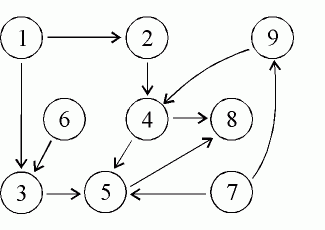
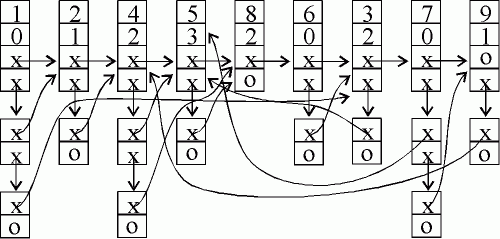

24. Други реализации на линейни структури от данни
Програмите са конкретни формулировки
на абстрактни алгоритми, които се базират
на определено представяне и структури от данни.
Никлаус Уирт
 Едносвързан
списък.
Едносвързан
списък.
Ще разгледаме най-икономичната (относно памет) реализация
на линейна структура от данни - едносвързан списък. Всеки елемент на този
списък съдържа данна и адреса на следващия елемент от списъка.
// slist.cpp
#include <iostream>
using namespace std;
struct Node {
char data; Node *next;
};
Node *top;
bool insert(Node *pt, char c) /*
insert after pt */
{ if (pt == NULL) return false;
Node *node = new Node;
if (node == NULL) return false;
node -> data = c;
node -> next = pt -> next;
pt -> next = node;
return true;
}
bool erase(Node *pt)
/* erase pt->next */
{ if ((pt == NULL) || (pt->next == NULL))
return false;
Node *node = pt->next;
pt->next = node->next;
delete node;
return true;
}
void print()
{ cout << "The list contains: ";
Node *pt = top;
while (pt != NULL)
{ cout << pt->data <<
" ";
pt = pt->next;
}
cout << "\n";
}
void create()
{ char ch;
Node *pt = NULL, *ptold = NULL;
top = NULL;
while (cin >> ch)
{ pt = new Node;
if (pt == NULL) return;
pt->data = ch;
pt->next = NULL;
if (top == NULL) top
= pt;
else ptold->next
= pt;
ptold = pt;
}
}
int main()
{ cout << "Enter some chars: ;
create();
print();
Node *pt = top;
pt=pt->next;
insert(pt, 'A'); print();
pt=pt->next;
erase(pt);
print();
return 0;
}
Enter some chars: 1
2 3 4 5 6 7 8 9
^Z
The list contains: 1 2 3 4 5 6 7 8 9
The list contains: 1 2 A 3 4 5 6 7 8 9
The list contains: 1 2 A 4 5 6 7 8 9
|
Начално състояние на списъка:
След добавяне на елемент на след втория:
След изтриване на елемент след третия:
Опашка.
Линейна структура от данни, в която се добавя елемент
само накрая и се изтрива елемент само от началото (пръв влязъл, пръв излязъл)
се нарича опашка.
// squeue.cpp
#include <iostream>
using namespace std;
struct Node {
char data; Node *next;
};
Node *top, *end;
bool append(char c)
/* insert after last */
{ if (end == NULL) return false;
Node *node = new Node;
if (node == NULL) return false;
node->data = c;
node->next = NULL;
end->next = node;
end = node;
return true;
}
bool erase()
/* erase first */
{ if (top == NULL) return false;
Node *node=top;
top = top->next;
delete node;
return true;
}
void print()
{ cout << "The queue contains: ";
Node *pt = top;
while (pt != NULL)
{ cout << pt->data <<
" ";
pt = pt->next;
}
cout << "\n";
}
void create()
{ char ch;
Node *pt = NULL, *ptold = NULL;
top = NULL;
while (cin >> ch)
{ pt = new Node;
// if (pt==NULL) break;
pt->data = ch;
pt->next = NULL;
if (top == NULL) top
= pt;
else
ptold->next = pt;
ptold = pt;
}
end = pt;
}
int main()
{ cout << "Enter some chars: ";
create(); print();
append('A'); print();
erase();
print();
return 0;
}
Enter some chars: 1
2 3 4 5 ^Z
The queue contains: 1 2 3 4 5
The queue contains: 1 2 3 4 5 A
The queue contains: 2 3 4 5 A
|
Топологично сортиране.
Дадено е частично наредено
множество, т.е. между някои от елементите му е дадена релация R,
със следните 3 свойства:
1. ако xRy и
yRz,
то xRz (транзитивност);
2. ако xRy,
то yRx не е вярно (несиметричност);
3. xRx не е
вярно (нерефлексивност).
Частичната наредба може да се опише с граф.
Пример. Множеството е: 1, 2, 3, 4, 5, 6, 7, 8,
9, а частичната наредба е:
1R2, 2R4, 4R5,
4R8, 6R3, 1R3, 3R5,
5R8, 7R5, 7R9, 9R4.

Задачата е да се изрази частичната наредба с линейна, т.е.
да се подредят елементите на множеството в редица, така, че ако xRy,
то x е преди y в редицата.
Алгоритъмът за решаване на
задачата е от Н. Вирт и използва свързани списъци. Данните се задават като
наредени двойки ключове - цели числа.
Пример: (1,2), (2,4), (4,5), (4,8), (6,3), (1,3),
(3,5), (5,8), (7,5), (7,9), (9,4)
Входна фаза:
Формира се свързан списък
от постъпващите данни с елементи от клас Leader. За да
се укажат всички "наследници" (т.е. втори аргументи на наредбата) на даден
елемент, се създава втори свързан списък от обекти от клас Trailer.

Процес на топологично сортиране:
За следващ елемент в редицата се избира елемент
с 0 предшественици.
.
// topsort.cpp
#include <iostream>
using std::cin;
using std::cout;
struct Trailer;
struct Leader {
int
key;
int
count; /* брой предшественици */
Trailer
*tr; /* списък от наследници */
Leader
*next; /* следващ елемент от входа*/
};
struct Trailer {
Leader
*id; /* наследник */
Trailer
*next; /* следващ от списъка с наследници */
};
Leader *head=new Leader;
void Create();
Leader *L(int);
void Zero();
void Tsort();
void main()
{ Create();
Zero();
Tsort();
}
void Create()
{ Leader *p, *q;
int x, y;
head = 0;
while (cin >> x && cin
>> y && !cin.eof())
{ p = L(x); q = L(y);
Trailer *t = new Trailer;
t->id = q;
t->next = p->tr;
p->tr = t;
(q->count)++;
}
}
Leader *L(int x)
{ Leader *p = head, *q;
q = p;
/* q is the last element of the list */
while (p)
{ if ((p->key) == x) return p;
q = p;
p = p->next;
}
p = new Leader;
p->key = x; p->count = 0;
p->tr = 0; p->next = 0;
if (q) q->next = p;
else
head = p;
return p;
}
void Zero()
{ Leader *p = head, *q;
head = 0;
while (p)
{ q = p; p = p->next;
/* нова задача за полето next и указателя
head */
if (!(q->count)) {
q->next = head; head = q; }
}
}
void Tsort()
{ Trailer *t;
Leader *q = head, *p;
while (q)
{ cout << (q->key) <<
' ';
t = q->tr;
q = q->next;
while (t)
{ p = t->id; (p->count)--;
if (!(p->count))
{ p->next = q; q = p; }
t = t->next;
}
}
}